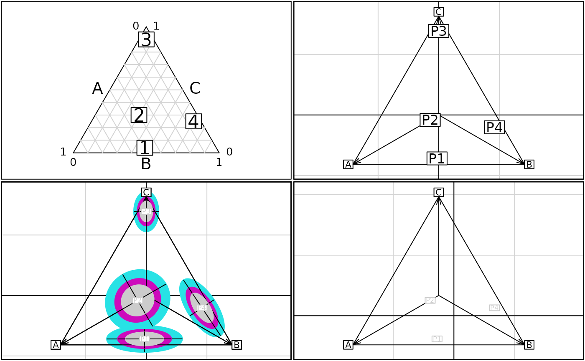

Graph of frequency profiles (useful for instance in genetic)
s.multinom.RdThe main purpose of this function is to draw categories using scores and profiles by their gravity center. Confidence intervals of the average position (issued from a multinomial distribution) can be superimposed.
Usage
s.multinom(dfxy, dfrowprof, translate = FALSE, xax = 1, yax = 2,
labelcat = row.names(dfxy), clabelcat = 1, cpointcat = if (clabelcat == 0) 2 else 0,
labelrowprof = row.names(dfrowprof), clabelrowprof = 0.75,
cpointrowprof = if (clabelrowprof == 0) 2 else 0, pchrowprof = 20,
coulrowprof = grey(0.8), proba = 0.95, n.sample = apply(dfrowprof, 1, sum),
axesell = TRUE, ...)Arguments
- dfxy
dfxyis a data frame containing at least two numerical variables. The rows ofdfxyare categories such as 1,2 and 3 in the triangular plot.- dfrowprof
dfrowprofis a data frame whose the columns are the rows ofdfxy. The rows ofdfxyare profiles or frequency distributions on the categories. The column number ofdfrowprofmust be equal to the row number ofdfxy.row.names(dfxy)andnames(dfrowprof)must be identical.- translate
a logical value indicating whether the plot should be translated(TRUE) or not. The origin becomes the gravity center weighted by profiles.
- xax
the column number of
dfxyfor the x-axis- yax
the column number of
dfxyfor the y-axis- labelcat
a vector of strings of characters for the labels of categories
- clabelcat
an integer specifying the character size for the labels of categories, used with
par("cex")*clabelcat- cpointcat
an integer specifying the character size for the points showing the categories, used with
par("cex")*cpointcat- labelrowprof
a vector of strings of characters for the labels of profiles (rows of
dfrowprof)- clabelrowprof
an integer specifying the character size for the labels of profiles used with par("cex")*clabelrowprof
- cpointrowprof
an integer specifying the character size for the points representative of the profiles used with par("cex")*cpointrowprof
- pchrowprof
either an integer specifying a symbol or a single character to be used for the profile labels
- coulrowprof
a vector of colors used for ellipses, possibly recycled
- proba
a value lying between 0.500 and 0.999 to draw a confidence interval
- n.sample
a vector containing the sample size, possibly recycled. Used
n.sample = 0if the profiles are not issued from a multinomial distribution and that confidence intervals have no sense.- axesell
a logical value indicating whether the ellipse axes should be drawn
- ...
further arguments passed from the
s.labelfor the initial scatter plot.
Value
Returns in a hidden way a list of three components :
- tra
a vector with two values giving the done original translation.
- ell
a matrix, with 5 columns and for rows the number of profiles, giving the means, the variances and the covariance of the profile for the used numerical codes (column of
dfxy)- call
the matched call
Examples
par(mfrow = c(2,2))
par(mar = c(0.1,0.1,0.1,0.1))
proba <- matrix(c(0.49,0.47,0.04,0.4,0.3,0.3,0.05,0.05,0.9,0.05,0.7,0.25), ncol = 3, byrow = TRUE)
proba.df <- as.data.frame (proba)
names(proba.df) <- c("A","B","C") ; row.names(proba.df) <- c("P1","P2","P3","P4")
w.proba <- triangle.plot(proba.df, clab = 2, show = FALSE)
box()
w.tri = data.frame(x = c(-sqrt(1/2),sqrt(1/2),0), y = c(-1/sqrt(6),-1/sqrt(6),2/sqrt(6)))
L3 <- c("A","B","C")
row.names(w.tri) <- L3
s.multinom(w.tri, proba.df, n.sample = 0, coulrowprof = "black", clabelrowprof = 1.5)
s.multinom(w.tri, proba.df, n.sample = 30, coul = palette()[5])
s.multinom(w.tri, proba.df, n.sample = 60, coul = palette()[6], add.p = TRUE)
s.multinom(w.tri, proba.df, n.sample = 120, coul = grey(0.8), add.p = TRUE)
print(s.multinom(w.tri, proba.df[-3,], n.sample = 0, translate = TRUE)$tra)

#> [1] 0.1249222 -0.1673818